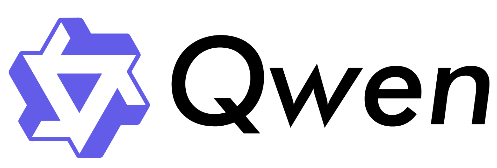

Master's Student
Tsinghua University, Department of Computer Science and Technology
Computer Science and Technology
2026.09 - 2028.06 (expected)I am a first-year Master's student in the Department of Computer Science and Technology at Tsinghua University (@ THU). My research interests lie in Multimodal Agents and Agentic RL.
I am interested in Multimodal Large Language Models and Reinforcement Learning, especially Agentic RL, which aims to train multimodal agents to percept, reason, act, and self-improve in diverse environments. If you share these interests, please feel free to contact me!
Tsinghua University, Department of Computer Science and Technology
Computer Science and Technology
2026.09 - 2028.06 (expected)Beijing University of Posts and Telecommunications
Telecommunications Engineering, Rank: 1st / 316
2022.09 - 2026.06
Qwen Team, Alibaba Group
Mentor: Yuxuan Wang, Jin Xu
Core Contributor of Qwen3.8-Omni [Blog] [Technical Report]
Present
Shanghai AI Laboratory, LLM Center
Mentor: Dr. Haodong Duan, Dr. Zun Wang and Prof. Xue Yang
Core Contributor of Intern-S1-Pro [Technical Report]
2025.03 - 2026.03THUNLP, Multimodal Group
Mentor: Dr. Chi Chen and Dr. Shuo Wang
2024.06 - 2025.03Scan to add me on WeChat